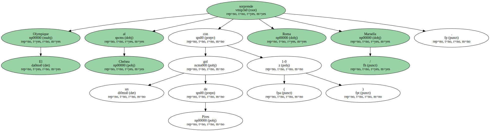
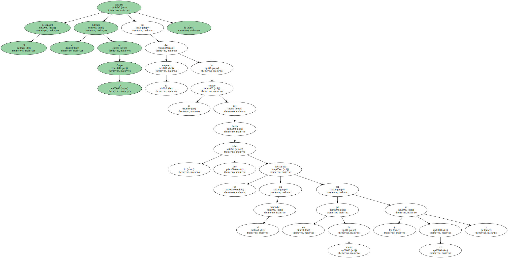
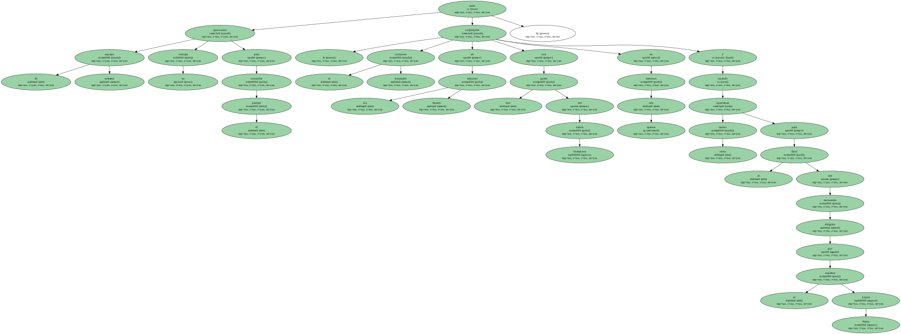
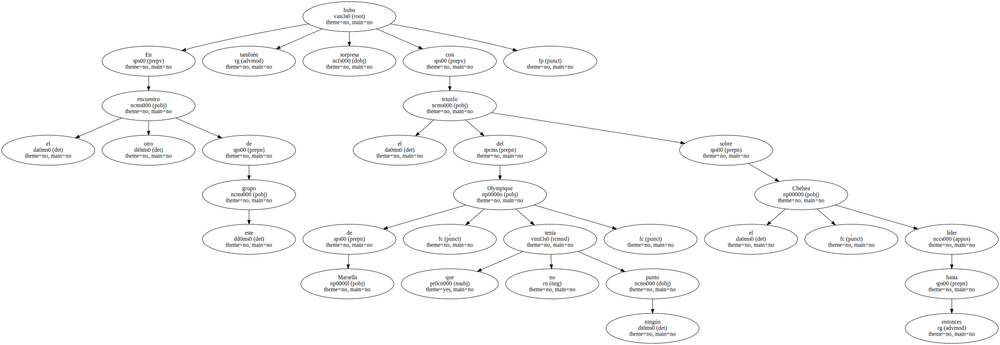
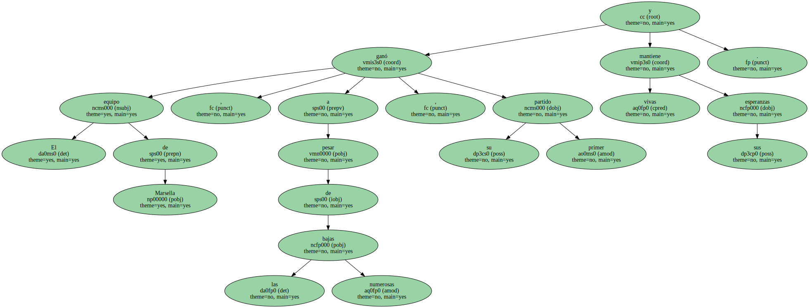
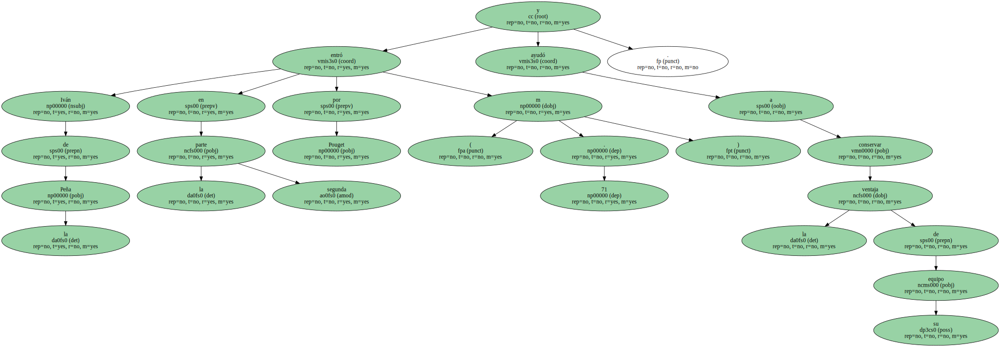
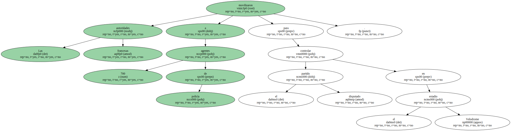
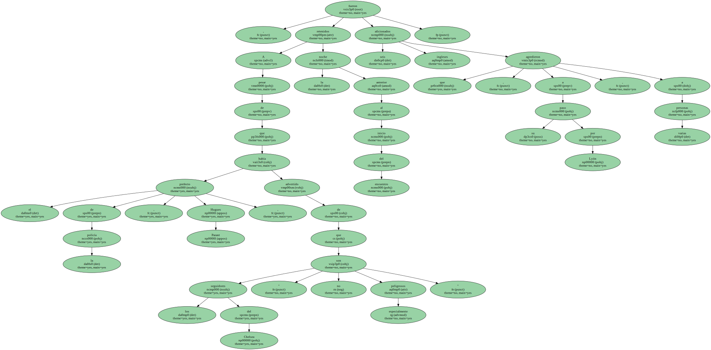

El Olympique sorprende al Chelsea con un gol de Pires ( 1-0 ) Roma / Marsella.
El Feyenoord alcanzó el liderato del Grupo D tras dar la sorpresa en el campo del Lazio , que se había adelantado en el marcador con un gol de Verón ( m . 37 ).
El equipo romano aprovechó su ventaja para controlar el partido , pero el conjunto holandés sorprendió en los minutos finales con dos goles del danés Tomasson en apenas seis minutos y cuando quedaban otros tantos para el final del encuentro dirigido por el español López Nieto.
En el otro encuentro de este grupo también hubo sorpresa con el triunfo del Olympique de Marsella , que no tenía ningún punto , sobre el Chelsea , líder hasta entonces.
El gol de Pires ( m . 16 ) redimió al Olympique de los males que le perseguían hasta ayer , tanto en la competición francesa como en esta segunda fase de la Liga de Campeones.

El equipo de Marsella , a pesar de las numerosas bajas , ganó su primer partido y mantiene vivas sus esperanzas.
Iván de la Peña entró en la segunda parte por Pouget ( m . 71 ) y ayudó a conservar la ventaja de su equipo.
Las autoridades francesas movilizaron a 700 agentes de policía para controlar el partido disputado en el estadio Velodrome.
A pesar de que el prefecto de la policía , Hugues Parant , había advertido de que los seguidores del Chelsea " no son especialmente peligrosos " , la noche anterior al inicio del encuentro fueron retenidos seis aficionados ingleses que , a su paso por Lyón , agredieron a varias personas.
